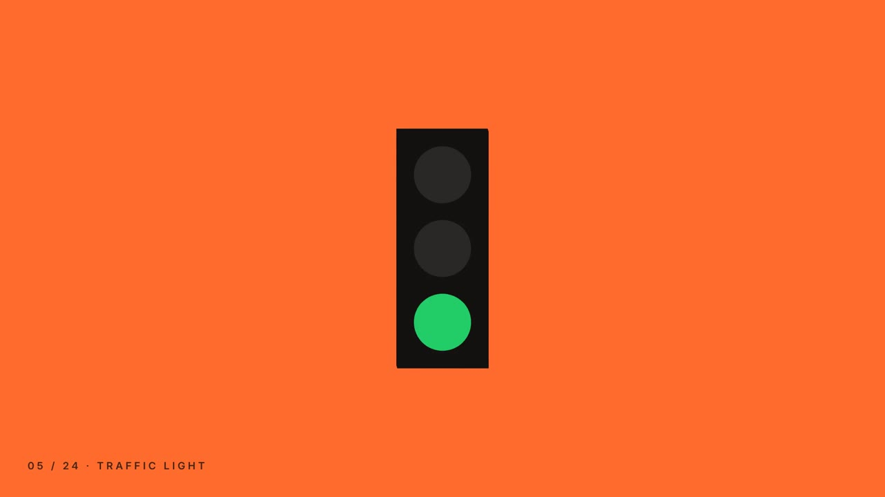
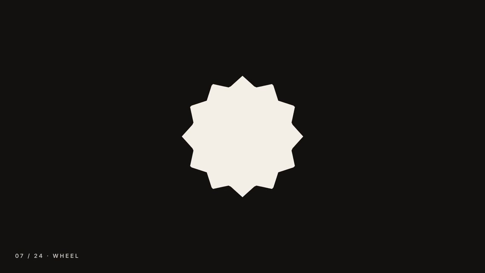
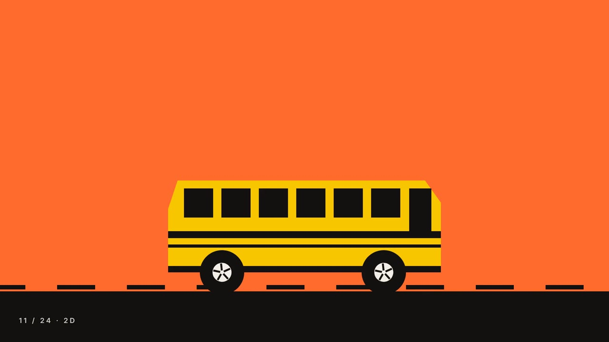
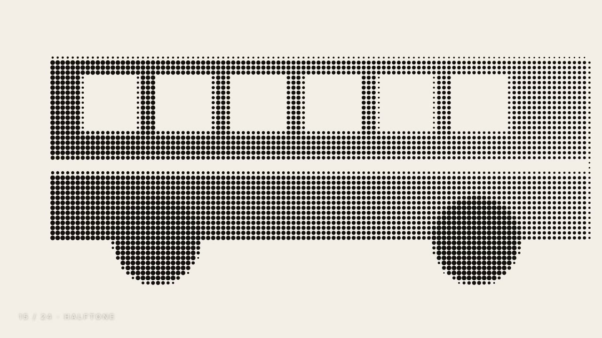
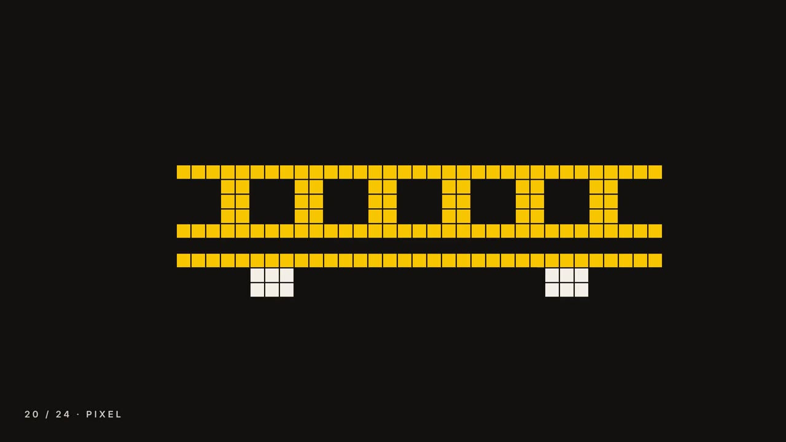
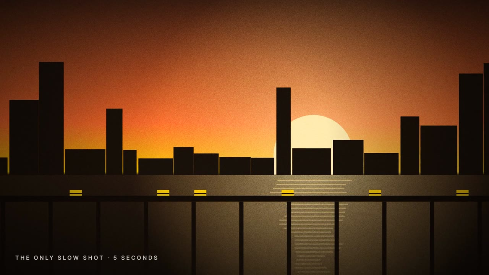

← All work
Experimental
Lagos in 24 Frames
Twenty-four shots of under a second each, each a different motion technique, one palette, cut to a single drum loop: the danfo, the market, the generator hum, the traffic light.
Format20s
RoleConcept, design, animation, sound
BriefSelf-initiated
Year2026
The brief
No client. The rule: 24 shots under a second each, each a different technique, one palette, one drum loop. Then a single slow shot. Show my own voice and my craft ceiling, with the same finish as the client-style pieces.
My role
Concept, design, animation, sound.
Tools
Made in code: HTML canvas, frame-by-frame render · Original drum loop and sound design
Self-initiated brief: Lagos in 24 Frames is a fictional project made for this portfolio.
Process
Styleframes





